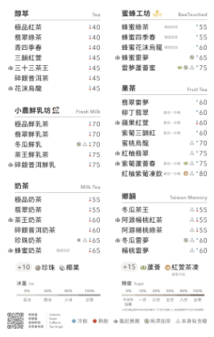

---

🎛️ 動態調校面板
按 T 關閉
🔤 數字字體：
Greycliff CF (有浮水印)
Montserrat (開源免費)
Poppins (開源免費)
Nunito (開源圓潤)
系統預設 (Arial)
📺 歷史顯示模式：
經典（1 主 + 2 歷史 · 原版）
方案 A · 六筆直列
方案 B · 六格網格
預設為經典。URL 預覽：
?mode=classic
·
?mode=a
·
?mode=b
📑 歷史號碼排版：
橫向 (左新 右舊)
直向 (下新 上舊)
⊞ 方案 B 六格排版：
B1 下排新（左→右）· 預設
B2 上排舊 / 下排新
B3 上→下、左→右填格
B4 右上最新
🟩 綠底透明度：
0.80
▶ 立即測試 (下一號)
↺ 清空歷史
321
322
323
A01
088
🔊 聲音: 開
⚡ 快速套用推薦風格：
🟢
俐落標準
0.4s 無回彈、乾淨
🌊
極致絲滑
0.6s 蘋果風優雅緩出
🎾
輕巧 Q 彈
微衝過頭、活潑彈性
💥
火車連鎖差動
舊號碼帶有抗力與延遲
① 新號碼進場 (Item 1)
進場時間 (秒)：
0.5s
回彈/Q彈力度 (1.0為不彈)：
1.0x (無回彈)
進場起跑位移 X (負數為由左滑入)：
0px
② 舊號碼被推動 (Item 2)
啟動延遲 (秒，產生跟隨差動感)：
0.0s
推擠抗力 X (負數產生被撞彈簧感)：
0px
舊號碼回彈力度：
1.0x (無回彈)